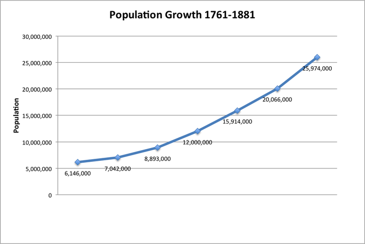
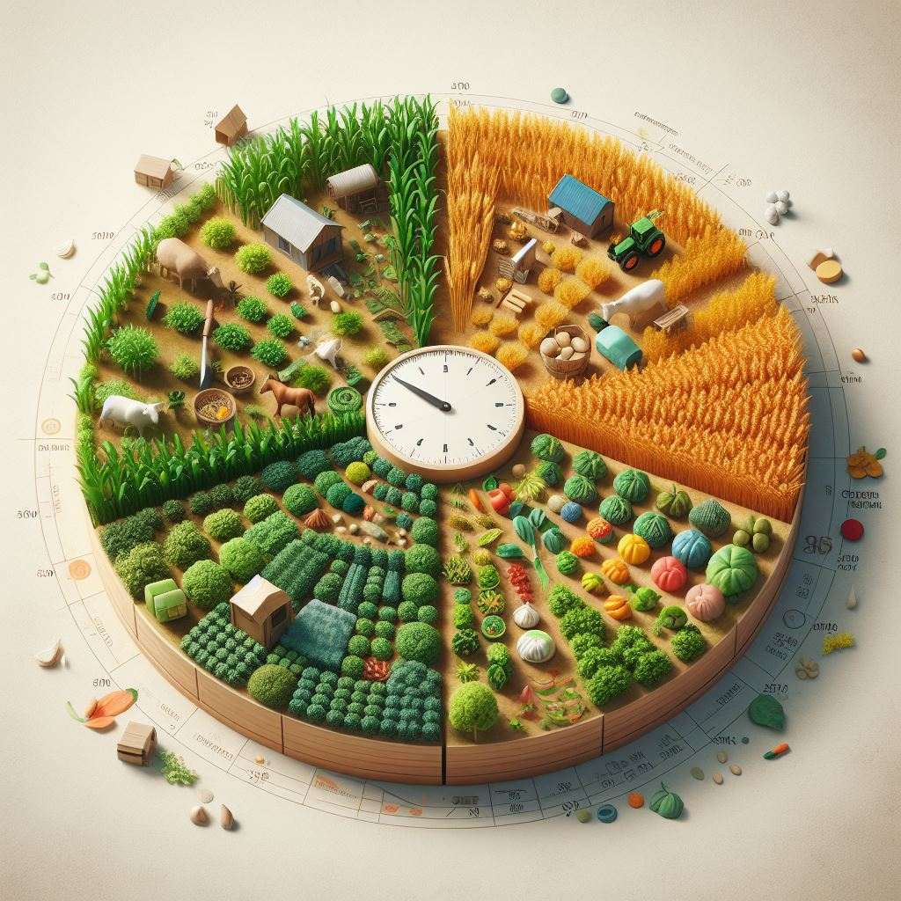
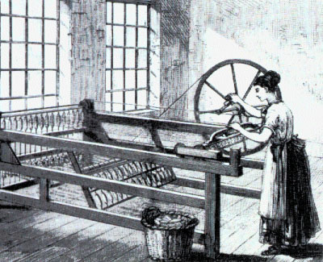
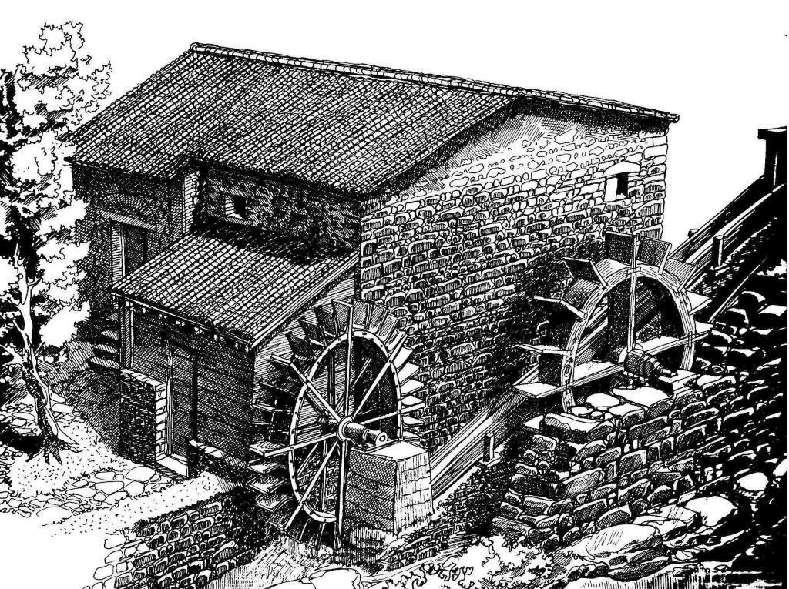

La popolazione europea torna a crescere.
Negli ultimi decenni del Seicento la popolazione cominciò gradualmente ad aumentare fino a raddoppiare, però la crescita demografica
non fu omogenea, infatti si sviluppò prevalentemente in Inghilterra e più lenta negli altri paesi.
|
 |
L’agricoltura inglese è all’avanguardia.
Nel Settecento l’Inghilterra era il paese più ricco grazie all’agricoltura, questo perchè molte terre comuni furono riunite in campi
più grandi con recinzioni, all’interno di questi campi i proprietari decisero di rendere l’agricoltura più moderna e produttiva, in una
prima fase si usava la rotazione triennale, nella seconda fase adottarono la rotazione
quadriennale, oltre a ciò iniziarono a selezionare gli animali per ottenere animali più forti e produttivi.
| |
|
 |
La rivoluzione agricola trasforma l'Inghilterra.
Quasi tutti i terreni erano in mano a grandi o medi proprietari terrieri, che spesso si dimostrarono intraprendenti e si
trasformarono in imprenditori, che investirono una parte dei loro capitali
in altre attività produttive, come finanziare la costruzione di nuovi canali o strade.
|
La ricchezza dell’Inghilterra è legata anche ai commerci.
Nel Settecento l'Inghilterra aveva il dominio sugli oceani, di conseguenza aveva il monopolio sulla tratta
degli schiavi, questo perchè aveva un flotta superiore ad ogni altra, questo le assicurava rifornimenti rapidi ed economici di
materie prime provenienti dalle colonie.
| |
Il lavoro a domicilio non basta più.
La lavorazione delle materie prime in prodotti finiti era sempre stata fatta da contadini o artigiani, in Inghilterra si utilizzava
il lavoro a domicilio, nel tempo libero dai campi, ma bisognò aumentare la produttività siccome la popolazione era in
costante aumento.
|
 |
L’industria tessile si rinnova.
Avendo la necessità di aumentare la produzione le persone ebbero delle invenzioni,nelle industrie
tessili ebbero la prima grande innovazioneche fu la navetta volante, ed in breve tempo le operazioni di
filatura e tessitura furono completamente meccanizzate.
| |
|
 |
Nuove energie.
Per azionare i nuovi macchinari serviva più forza, così si ricorse all'energia idraulica,
poi si cercò un altro tipo di energia, quella a vapore in pressione.
|
Perché si parla di rivoluzione industriale.
Grazie alle energie ed ai macchinari, iniziò un cambiamento lento ma irreversibile nel sistema di lavoro e nella vita, perciò viene considerata
la più grande rivoluzione economica del nostro tempo, dovuta dall’aumento demografico, aumento della domanda di beni di consumo,
capitali da investire, manodopera abbondante ed infine alle ricchezze minerarie.
|